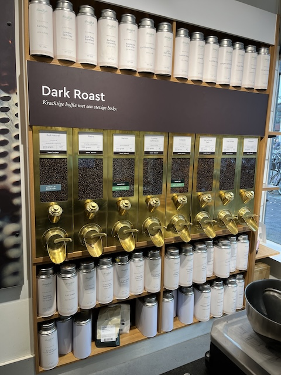

Simon Lévelt is een familie bedrijf dat al sinds 1826 bestaat. De winkel verkocht vroeger specerijen, cacao, koffie en thee. In de jaren zeventig besloot de toenmalige eigenaar te focussen op biologische en eerlijke handel.
De winkel heeft tegenwoordig meer dan 40 vestigingen in Nederland en België. De winkels hebben een duurzame en ambachtelijke uitstraling. In de winkels kom je veel houten schappen tegen waar de koffiebonen en losse theeën goed te zien zijn.
